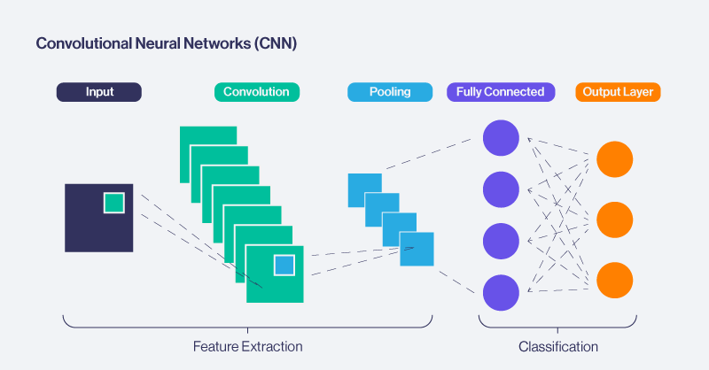

Text Generation and Question-Answering Using CNNs, RNNs, and Transformers
Project Description and Questions
The project employs CNNs, RNNs, and Transformers to tackle text generation and question-answering tasks, with a structured approach covering data preprocessing, model training, and evaluation. Each model is designed for specific aspects of sequential data processing, and datasets like SQuAD and custom-prepared data sources are utilized. How do CNNs, RNNs, and Transformers compare in their ability to process sequential data for NLP tasks? CNNs are highly efficient for extracting n-gram features from text due to their ability to capture local patterns. They excel in tasks where short-term dependencies or positional context is crucial, such as sentiment analysis. However, they struggle with long-term dependencies. RNNs, including LSTMs and GRUs, are well-suited for modeling sequential data with dependencies over time. They handle long-term context better than CNNs but face challenges like vanishing gradients, leading to difficulties in capturing very long dependencies. Transformers surpass both CNNs and RNNs in sequential data processing, particularly for long contexts. Using self-attention mechanisms, they model relationships between all elements in a sequence simultaneously. This makes them highly efficient for tasks requiring complex contextual understanding, such as question answering and text generation. In this project, CNNs were primarily used for feature extraction, RNNs for coherent text generation, and Transformers (e.g., BERT and T5) for question answering due to their superior contextual representation.
What preprocessing techniques are most effective for text generation and question answering? Effective preprocessing was crucial for both text generation and question-answering tasks. The process began with text cleaning, which involved removing special characters, extra spaces, and stop words using tools like NLTK and spaCy to ensure clean input data. Tokenization followed, converting text into meaningful units using methods such as WordPiece or Byte Pair Encoding, with pre-trained tokenizers like those in BERT proving especially effective. To handle varying input lengths, sequences were padded and truncated to maintain consistent dimensions suitable for CNNs, RNNs, and Transformers. Data augmentation techniques, such as creating paraphrases or adding noise, were used to enhance dataset robustness. Finally, vectorization transformed text into numerical representations, either through pre-trained embeddings or embeddings learned during training, ensuring the data was well-structured and ready for model consumption.
How does hyperparameter tuning impact model performance? Hyperparameter tuning significantly influenced the performance of the models by optimizing key parameters. Adjusting the learning rate balanced the speed and stability of convergence, while selecting appropriate batch sizes ensured efficient training without memory issues. Regularization techniques like dropout were employed to mitigate overfitting, and the depth and width of CNNs and RNNs were fine-tuned to capture features and dependencies effectively. In Transformers, the number of attention heads in multi-head attention layers was adjusted to balance model capacity and computational efficiency. Grid search and random search methods were used to systematically explore and identify the best hyperparameter configurations, leading to improved model accuracy and robustness. What challenges arise when combining CNNs, RNNs, and Transformers in a single pipeline? Combining CNNs, RNNs, and Transformers into a single pipeline posed several challenges. Ensuring compatibility between models required careful alignment of outputs and inputs, with intermediate processing steps designed to bridge the differences. Computational complexity was a significant hurdle, as Transformers, in particular, demanded substantial resources, especially when working with outputs from CNNs or RNNs. The sequential nature of RNNs and the quadratic complexity of Transformers' self-attention mechanism also contributed to increased latency, slowing down the overall pipeline. Additionally, optimization presented difficulties, as each model had distinct requirements, necessitating meticulous tuning to prevent performance degradation. These challenges were addressed through modular design, intermediate evaluations, and leveraging transfer learning to optimize Transformer components.
Source Code
**Data Gathering and Preprocessing**
# download and read in json files
import json
import re
import nltk
nltk.download('stopwords')
nltk.download('punkt')
nltk.download('punkt_tab')
from nltk.corpus import stopwords
from nltk.tokenize import word_tokenize
import spacy
from tensorflow.keras.preprocessing.sequence import pad_sequences
import pandas as pd
from tensorflow.keras.preprocessing.text import Tokenizer
nlp = spacy.load("en_core_web_sm")
def load_json(file_path):
with open(file_path, 'r') as file:
return json.load(file)
file1_path = 'squad_dev_set.json'
file2_path = 'squad_train_set.json'
data1 = load_json(file1_path)
data2 = load_json(file2_path)
combined_data = data1['data'] + data2['data']
preprocessed_data = []
i = 0
for entry in combined_data:
for paragraph in entry['paragraphs']:
for qa in paragraph['qas']:
preprocessed_data.append({
'topic_id': i,
'cleaned_question': qa['question'],
'answer': qa['answers'][0]['text'] if qa['answers'] else None
})
i+=1
preprocessed_data_final = [qanda for qanda in preprocessed_data if qanda['answer'] is not None]
pd.DataFrame(preprocessed_data_final).to_csv("qAndA.csv")
#!pip install wikipedia
import wikipedia
import pandas as pd
topics = list(pd.DataFrame(combined_data)['title'])
wikiTopics = []
i = 0
#https://www.geeksforgeeks.org/wikipedia-module-in-python/
for topic in topics:
searchTopic = re.sub(r'%A9', 'e', topic)
searchTopic = re.sub(r'%..', '', searchTopic).strip()
print(searchTopic, i)
if len(searchTopic) >= 1:
topico = wikipedia.search(searchTopic)[0]
wikiTopics.append(topico)
i+=1
#Chat Assistance
#https://www.geeksforgeeks.org/wikipedia-module-in-python/
pages = []
i = 0
for topic in wikiTopics:
try:
print(topic)
pages.append(wikipedia.page(topic))
except wikipedia.exceptions.DisambiguationError as e:
print(f"Disambiguation error for topic: {topic}. Options: {e.options}")
pages.append(None)
except wikipedia.exceptions.PageError as e:
print("Page not found")
pages.append(None)
i+=1
#Chat
from bs4 import BeautifulSoup
# Assume `html_content` is the HTML of a Wikipedia page
def get_main_body_text(html_content):
# Parse the HTML content
soup = BeautifulSoup(html_content, 'html.parser')
# Locate the main content div
main_content = soup.find('div', class_='mw-parser-output')
# Extract the text from paragraphs within the main content
if main_content:
paragraphs = main_content.find_all('p')
body_text = ' '.join([p.get_text(strip=False) for p in paragraphs])
return body_text
else:
return None
# Example: Assuming you have the raw HTML from a Wikipedia page
# html_content = wikipedia.page("Python programming").html()
# main_text = get_main_body_text(html_content)
# print(main_text)
context = []
i = 0
for page in pages:
if page != None:
text = get_main_body_text(page.html())
if text != None:
context.append(text)
else:
context.append(None)
i += 1
print(i)
context
contexto = context.copy()
def clean_text(content):
content = re.sub(r'<.*?>', '', content)
content = re.sub(r'\[\d+\]', '', content)
#content = re.sub(r'.', '', content)
content = re.sub(r'\s+', ' ', content)
return content
for i in range(len(contexto)):
if contexto[i] != None:
contexto[i] = clean_text(contexto[i])
else:
contexto[i] = ''
#ChatGPT
with open('context.txt', "w") as file:
for line in contexto:
file.write(line + "\n")
print(contexto)
from random import random
question_answer = []
indices = len(preprocessed_data_final)
while len(question_answer) < 25:
index = int(random() * indices)
qa = preprocessed_data_final[index]
if context[qa['topic_id']] != None:
question_answer.append(qa)
pd.DataFrame(question_answer).to_csv("questions.csv", index=False)
**Transformers for Question Answering**
#ChatGPT
with open('/content/drive/MyDrive/Colab Notebooks/CapStone/context.txt', "r") as file:
file_content = [line.strip() for line in file]
import pandas as pd
questionSet = pd.read_csv('/content/drive/MyDrive/Colab Notebooks/CapStone/questions.csv')
questiones = questionSet.values.tolist()
questiones
from transformers import pipeline
db_question_answerer = pipeline("question-answering", model='distilbert-base-cased-distilled-squad')
from transformers import AutoModelForQuestionAnswering, AutoTokenizer, pipeline
#GPT2
model_name = "anas-awadalla/gpt-2-large-squad"
model = AutoModelForQuestionAnswering.from_pretrained(model_name)
tokenizer = AutoTokenizer.from_pretrained(model_name)
#gpt2_question_answer = pipeline('question-answering', model=model_name, tokenizer=model_name)
#T5 textgen
t5_question_answer = pipeline("text2text-generation", "lmqg/t5-small-squad-qag")
#Bert Squad
model_name = "deepset/bert-base-cased-squad2"
bert_squad_question_answer = pipeline('question-answering', model=model_name, tokenizer=model_name)
#Distil Bert
db_question_answerer = pipeline("question-answering", model='distilbert-base-cased-distilled-squad')
#Bert Base
model_name = "bert-base-cased"
bert_base_question_answer = pipeline('question-answering', model=model_name)
gpt2_responses = []
t5_responses = []
bert_squad_responses = []
bert_base_responses = []
db_responses = []
for question in questiones:
question_idx = question[0]
context = file_content[question_idx]
question_ask = question[1]
answer = question[2]
db_responses.append([question_ask, answer, db_question_answerer(question=question_ask, context=context)['answer']])
#gpt2_responses.append([question_ask, answer, gpt2_question_answer(question=question_ask, context = context)['answer']])
#t5_responses.append([question_ask, answer, t5_question_answer(f"{question_ask}, context = {context}")[0]['generated_text']])
bert_squad_responses.append([question_ask, answer, bert_squad_question_answer({'question': question_ask, 'context': context})['answer']])
bert_base_responses.append([question_ask, answer, bert_base_question_answer({'question': question_ask, 'context': context})['answer']])
pd.DataFrame(db_responses).to_csv('/content/drive/MyDrive/Colab Notebooks/CapStone/db_responses.csv')
#pd.DataFrame(gpt2_responses).to_csv('/content/drive/MyDrive/Colab Notebooks/CapStone/gpt2_responses.csv')
#pd.DataFrame(t5_responses).to_csv('/content/drive/MyDrive/Colab Notebooks/CapStone/t5_responses.csv')
pd.DataFrame(bert_squad_responses).to_csv('/content/drive/MyDrive/Colab Notebooks/CapStone/bert_squad_responses.csv')
pd.DataFrame(bert_base_responses).to_csv('/content/drive/MyDrive/Colab Notebooks/CapStone/bert_base_responses.csv')
pd.DataFrame(questiones).to_csv('/content/drive/MyDrive/Colab Notebooks/CapStone/questiones.csv')
#https://huggingface.co/distilbert/distilbert-base-cased-distilled-squad
from transformers import pipeline
db_question_answerer = pipeline("question-answering", model='distilbert-base-cased-distilled-squad')
context = file_content[2]
question = "What is southern California often abbreviated as?"
result = db_question_answerer(question=question, context=context)
print(result['answer'])
#https://huggingface.co/anas-awadalla/gpt-2-small-squad
from transformers import AutoModelForQuestionAnswering, AutoTokenizer, pipeline
model_name = "anas-awadalla/gpt-2-large-squad"
model = AutoModelForQuestionAnswering.from_pretrained(model_name)
tokenizer = AutoTokenizer.from_pretrained(model_name)
qa = pipeline('question-answering', model=model_name, tokenizer=model_name)
question = "What is southern California often abbreviated as?"
qa(context = file_content[2], question = question)
#https://huggingface.co/lmqg/t5-small-squad-qag
from transformers import pipeline
pipe = pipeline("text2text-generation", "lmqg/t5-small-squad-qag")
output = pipe(f"{question}, context = {file_content[2]}")[0]['generated_text']
print(output)
#https://huggingface.co/deepset/bert-base-cased-squad2
from transformers import AutoModelForQuestionAnswering, AutoTokenizer, pipeline
model_name = "deepset/bert-base-cased-squad2"
question = "What is southern California often abbreviated as?"
# a) Get predictions
nlp = pipeline('question-answering', model=model_name, tokenizer=model_name)
QA_input = {
'question': question,
'context': file_content[2]
}
res = nlp(QA_input)
print(res['answer'])
#https://huggingface.co/google-bert/bert-base-uncased
model_name = "bert-base-cased"
tokenizer = AutoTokenizer.from_pretrained(model_name)
model = AutoModelForQuestionAnswering.from_pretrained(model_name)
question = "What is southern California often abbreviated as?"
# a) Get predictions
nlp = pipeline('question-answering', model=model_name)
QA_input = {
'question': question,
'context': file_content[2]
}
res = nlp(QA_input)
print(res)